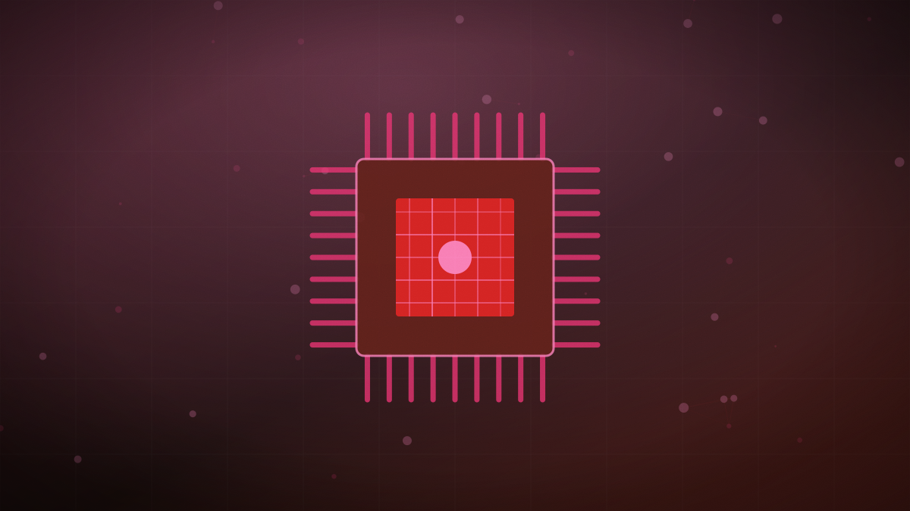

Google ships Gemini Omni 1.1 Flash with scene extension and 4K upscaling
The video model can now extend generated scenes to 40 seconds, take specified first and last frames, and draft cheap 360p previews before a full-resolution render.

Original cover art, generated for this story. THE VISSION does not republish third-party press imagery.
- Gemini Omni 1.1 Flash extends generated scenes up to 40 seconds in 10-second increments, using up to 10 seconds of prior context for visual consistency.
- A new first/last-frame control lets developers specify start and end keyframes and have the model generate the motion between them.
- A 360p draft mode renders previews up to 60% faster and at a third of the cost of standard output before a final 1080p or 4K render.
- The model is available via Google AI Studio, the Gemini API, Google Flow for subscribers, and a scene-extension feature in the Gemini app.
Google has released Gemini Omni 1.1 Flash, a production-ready update to its generative video model aimed squarely at developers rather than casual users, adding a set of editing controls the company says move teams "beyond generating videos to truly directing them."
The headline addition is scene extension: the model can now stretch a generated clip up to 40 seconds in 10-second increments, drawing on up to 10 seconds of prior context each time to keep motion and characters visually consistent across the extension. A new first/last-frame control lets a developer specify the opening and closing frames of a shot and have the model fill in the camera movement and motion between them.
For cost and iteration speed, a new 360p draft mode renders lightweight previews up to 60% faster and at roughly a third of the cost of a standard 720p render, letting a team iterate cheaply before committing to a full-resolution pass. Finished output can be upscaled natively to 1080p or 4K, and the model accepts up to three seconds of reference video in its multimodal input to preserve a character's appearance or a specific visual style across a shot.
The model is available through Google AI Studio for experimentation, the Gemini API and Gemini Enterprise Agent Platform for production use, Google Flow for AI Plus, Pro and Ultra subscribers, and a scene-extension feature built into the consumer Gemini app.
Draft-then-upscale workflows and explicit start/end-frame control are the kind of production controls video-editing professionals have been asking generative tools for, rather than the novelty-clip generation most video models still ship. Pricing the cheap draft mode at a third of standard cost is Google's bet that iteration speed, not just output quality, is what determines whether a studio actually adopts a generative model into a real pipeline.